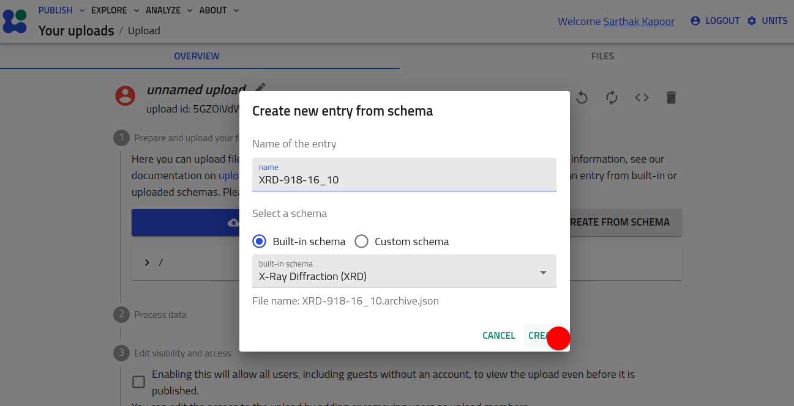
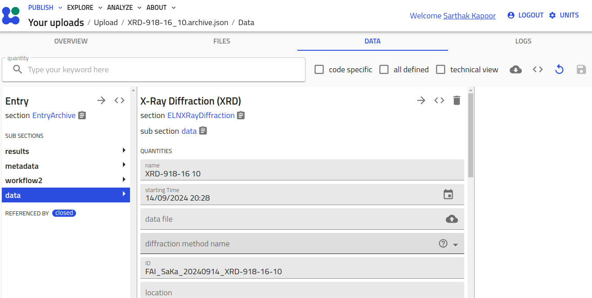
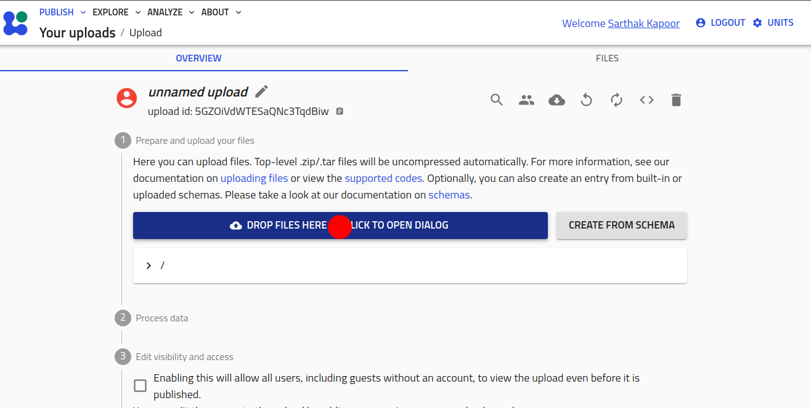
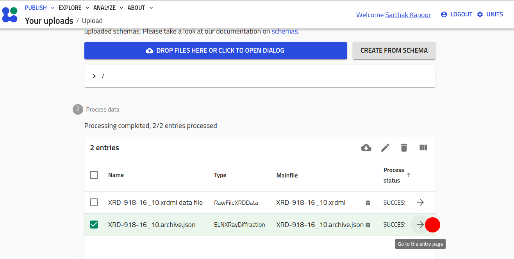

How to Use the NOMAD-measurement Plugin¶
The NOMAD-measurement plugin provides standardized schemas for common characterization methods and instruments. These schemas are generalized to ensure they are not tied to any specific lab or setup, promoting interoperability across the materials science community. Users can inherit from these schemas, further specializing them to fit their specific needs, all while maintaining a consistent structure that benefits broader community use. For more details, see levels of schemas in NOMAD.
To use this plugin, you must have it installed on your NOMAD Oasis instance (please refer to the installation guide for instructions). Alternatively, you can explore the plugin’s functionality and make use of it on our centrally hosted Example Oasis.
This guide will walk you through the different ways to use the NOMAD-measurement plugin:
- Without specialization: Instantiating NOMAD entries directly from the "built-in schemas".
- Inheriting and specializing: Using custom YAML schemas to adapt the existing schemas for your specific use case.
- Using Python schema plugins: Inheriting and specializing schemas with Python for advanced customization.
Using "Built-in Schemas"¶
In this section, we will demonstrate how to use the standard, built-in entry schemas provided by the plugin without any specialization. These schemas can be directly instantiated to create entries in a NOMAD Oasis.
- Start a new upload and click on the CREATE FROM SCHEMA button.
-
Select the schema from the drop-down menu, add the name for the entry, and hit CREATE.


The user can also simply drop their measurement files into the Upload folder. The plugin
comes with matching parsers that can automatically parse specific file types, create
corresponding measurement entry section and populate it. Let's see an example for
XRD measurement file of file type .xrdml coming from Panalytical X-ray Diffractometer.
You can also
download this file
and perform the following steps.
Info
Supported measurements and file types can be found here.
- Start a new upload.
-
Click on DROP FILES HERE button and select the XRD file. Or simply drag and drop the file on the button.

-
An entry using
ELNXRayDiffractionsection is automatically created and populated based on the data from the measurement file. Open it by clicking on the right arrow.
Inheriting and Specializing Using Custom YAML Schemas¶
Here, we will guide you through how to extend and specialize the built-in schemas using custom YAML schemas. This approach allows you to tailor the schema to your specific requirements while still leveraging the standardized base provided by the plugin.
Let's assume that you want to extend the XRDResult
section and include the position where the X-ray impinges the sample. For this, you
want to add two array quantities x_position and y_position. Based on this new
result section, let's call it MyXRDResult, you want to create modified entry section
MyELNXRayDiffraction. You can write a YAML schema to define these custom section.
Here's an example code:
definitions:
name: 'XRayDiffraction customization'
sections:
MyXRDResult:
base_sections:
- nomad_measurements.xrd.schema.XRDResult
quantities:
x_position:
type: np.float64
shape: ['*']
unit: meter
description: "x-coordinate of the point of X-ray incidence in sample holder coordinate system."
y_position:
type: np.float64
shape: ['*']
unit: meter
description: "y-coordinate of the point of X-ray incidence in sample holder coordinate system."
MyELNXRayDiffraction:
base_sections:
- nomad_measurements.xrd.schema.ELNXRayDiffraction
- nomad.datamodel.data.EntryData
sub_sections:
results:
repeats: True
section: '#/MyXRDResult'
<file_name>.archive.yaml (or download it from
here
) and add it in your
upload folder to access the custom schemas.
You can learn in detail how to create your own YAML schemas in our previous tutorial 8 and tutorial 13. You can navigate in the tutorial 8 repository to see some other examples of YAML files that inherit and extend existing classes.
Inheriting and Specializing Using Python Schema Plugins¶
The most customizable way of using the sections defined in the nomad-measurements
plugin is to extend the sections in another NOMAD schema plugin.
For a detailed tutorial on how to setup and develop a plugin we refer you to the tutorial on Developing a NOMAD Plugin.
Once your plugin is setup you can include the required nomad-measurements version
as a dependency in your pyproject.toml:
In your schema packages you can then import the desired section definitions and specialize them to your need by adding any additional quantities or subsections that you require:
from nomad_measurements.xrd.schema import (
XRayDiffraction,
XRDResult,
)
from nomad.metainfo import Quantity
class MyXRDResult(XRDResult):
my_additional_quantity = Quantity(
type=str,
description='My additional string quantity`
)
class MyXRayDiffraction(XRayDiffraction):
results = SubSection(
description="""
Specialized results of my X-ray diffraction measurement.
""",
section_def=MyXRDResult,
repeats=True,
)
By using existing subsection names (see results in the example above) you can specialize
the subsections. Please keep in mind that the specialized subsection should always
inherit the original one. In the example above the results subsection used to be of type
XRDResult but we specialized it to MyXRDResult results but made sure
that this section inherits XRDResult. By doing this we ensure the
polymorphism and that we
will always find results of (sub)type XRDResult in an XRayDiffraction.